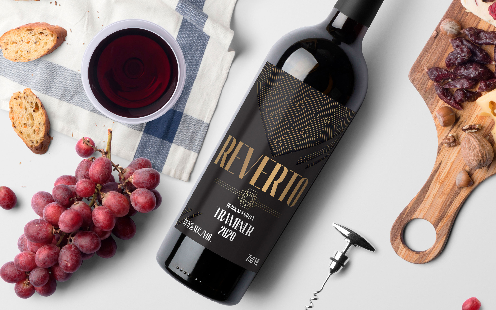
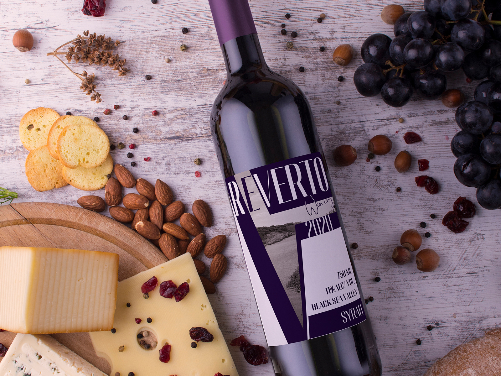
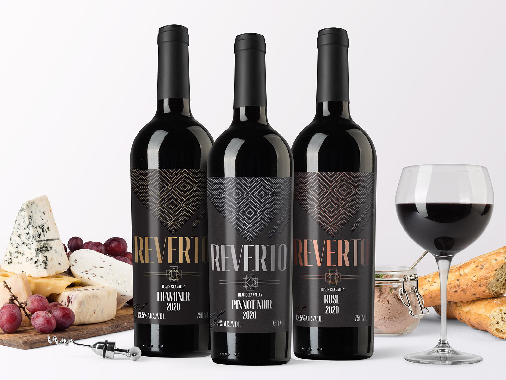
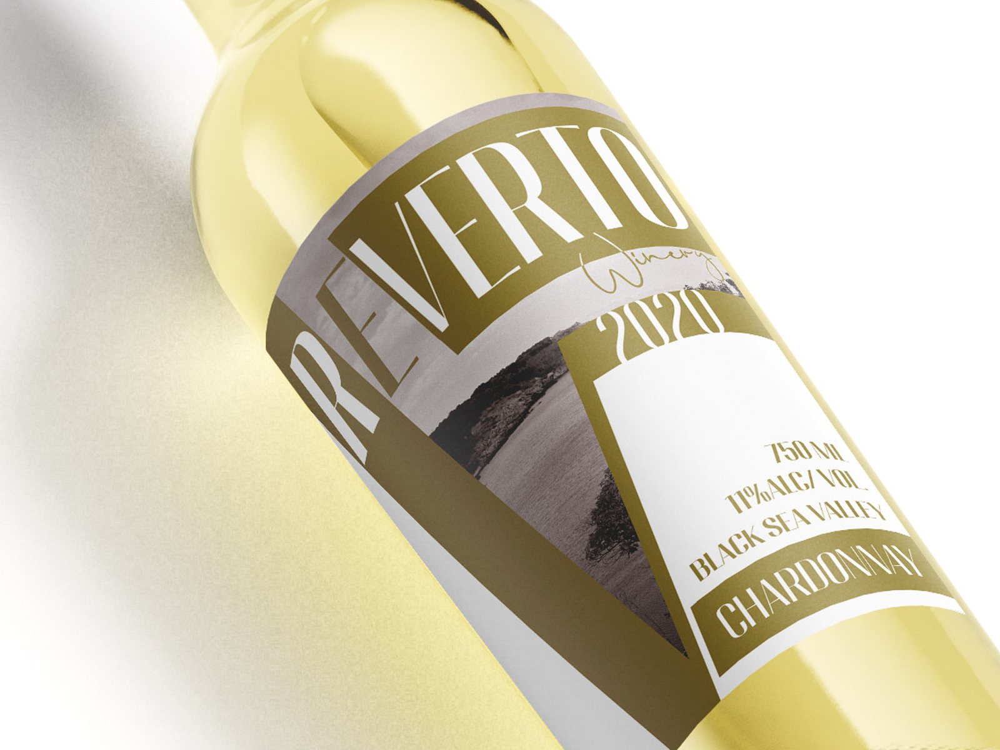
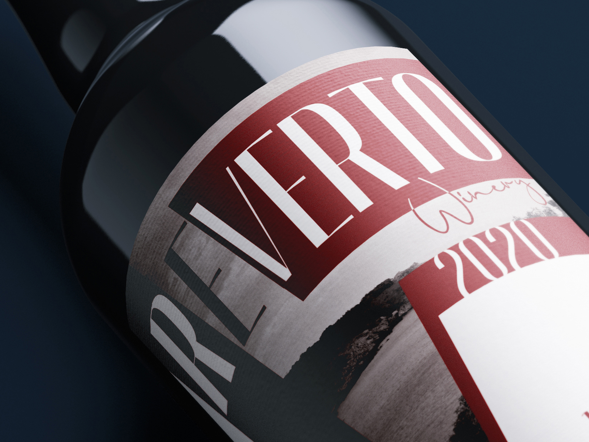
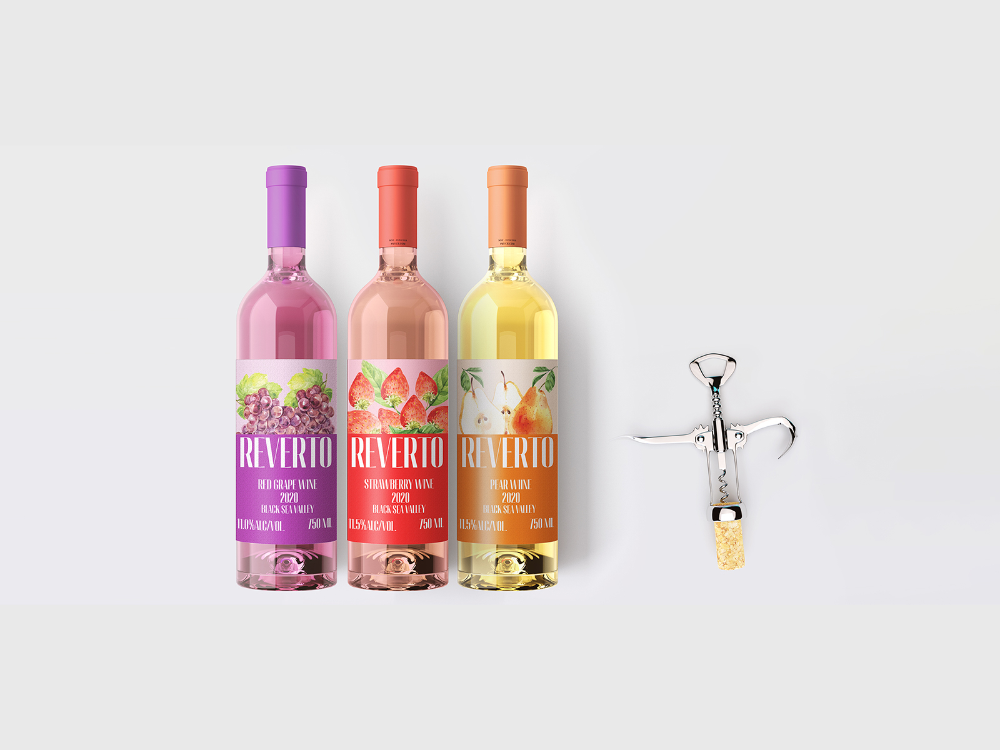
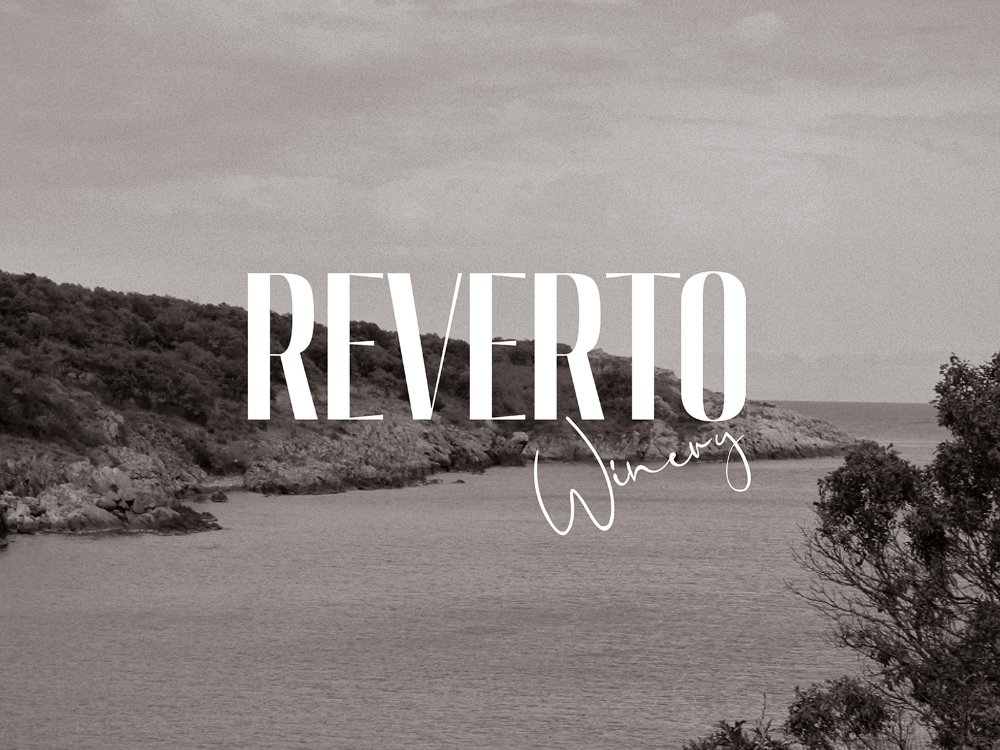

A boutique label system that holds its own on a shelf full of tradition — without borrowing tradition's visual language.
Wine labels usually compete by shouting. Reverto asked for the opposite: one serif mark, a palette from soil and glass, and labels that read as typographic studies first.

Reverto Winery — 01+
Reverto Winery — 02+The brief was blunt: hold your own on a shelf built for tradition, without its usual tricks. So the system leans on proportion and paper stock, with a fixed grid for varietal information and a palette that shifts slightly by vintage.
Restraint isn't the absence of a decision — on this shelf, it was the boldest one available.

Reverto Winery — 03+
Reverto Winery — 04+
Reverto Winery — 05+
Reverto Winery — 06+On a shelf where every other label is trying to look old, Reverto's looks considered instead — and that turned out to be the thing that actually stood out.

Reverto Winery — Final+